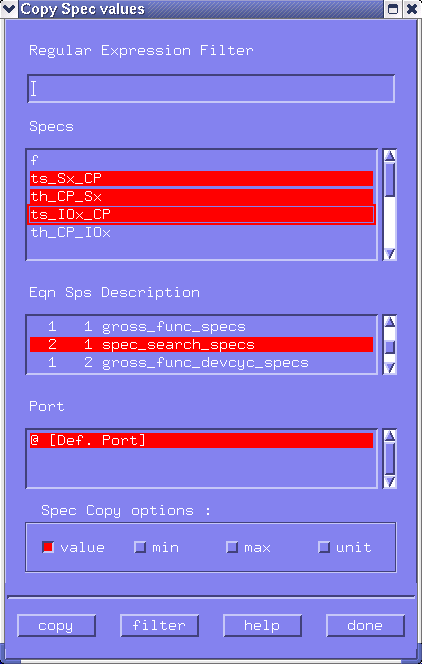

Copying Spec Values from Different Specification Sets
Occasionally you may need to copy spec values from one specification set to another. You might typically want to do this if you have just created a new specification set which will use a lot of values common to another one.
- Click Copy Spec Values in the Edit pulldown menu.
A screen similar to that of the figure below appears.

- Highlight the variables you want to copy.
- Highlight the specification set from which you want to copy from.
- Activate the entity/entities (value, min, max and unit) you want to copy.
- Click copy.
- Repeat these last four steps for any other entities you want to copy.
- When you have finished copying entity values, click done.